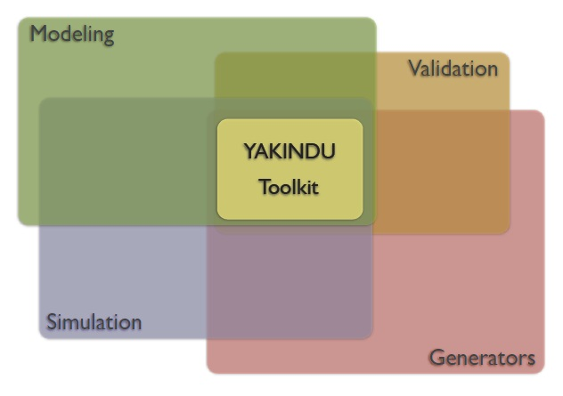

The statechart tools are one central part of YAKINDU: the modular toolkit for model driven development of embedded systems. It is based on the open source development platform Eclipse. The YAKINDU Statechart tools provide the following tools to deal with state machine diagramms:
The following graph shows these features and their relation to each other:

Yakindu Statechart Models are based on statecharts as defined by David
Harel and are close to UML state machines. Thus, they support all
structural model elements as defined by the UML specification, which are
States (orthogonal and hierarchical), Regions, Transitions and Pseudo
States (History, Deep History, Initial, Final, Choice, Join / Fork).
In addition, Yakindu Statechart Models specify interfaces that define
the interaction of the state machine with its environment. Besides some
more advanced concepts like Entry / Exit Points, an interface basically
consists of in and out Events as well as Variables including types.
These well-defined statechart interfaces are especially useful in the
context of component models and product line engineering.
For defining interfaces and modeling the dynamic aspects of statecharts
(triggers, guards and actions) SCT provides a statically typed, textual
action language called SText. It tightly integrates into the graphical
editor and supports the user with code completion, syntax highlighting,
cross referencing and validation during modeling.
Yakindu Statechart Models can be executed via an integrated simulation
engine. The simulation engine supports two different types of execution
semantics, cycle based and event driven execution. The default execution
semantic is cycle based which executes a statechart cycle within a fixed
period of time and thus allows processing of concurrent events. In
contrast, the event based approach executes a statechart cycle as soon
as an event occurred.
During simulation, the currently active states and the transition path
including the previous states are highlighted in the editor for visual debugging. An additional view
shows the variable values and allows to raise events.
Apart from that, the engine uses a virtual time during simulation. The
user can provide a time scaling factor that is multiplied with the real
time. This is especially useful during debugging, if the statechart
model contains very tight or long running time triggers.
Yakindu Statechart Tools currently support the generation of Java, C and
C++ Code. All generators can be customized with a generator model. This
is a textual model file where generator features, like the execution
type (event or cycle based), or the interface styles (static or
generic), can be specified.
The code generation process can either be executed with a builder that
starts code generation on resource change or manually with a context
menu action.
Yakindu Statechart Tools were developed with a domain specific
adaptability in mind. Several extension points allow the customization
of all mentioned aspects. It is possible to contribute a custom type
system or custom action languages which may be a dialect of SText or a
complete new language.
Also, the different code generators can be customized or new code
generators for other target languages can be plugged in easily.
The YAKINDU SCT 2 are integrated in Eclipse and use the textual modeling toolkit Xtext and the graphical modeling toolkit GMF. Behind the scenes of the statechart tools there are some meta models:
The following graph shows these meta models, which are all defined as languages and their position in the SCT 2 work flow:
The statechart editor uses SText and SGraph. The actual model of the state machine is defined in SText. SGraph only describes the graphical representation in the editor. SExec is an intermediate execution model. It is used behind the scenes as a foundation for the code generators and the simulation engine. This guarantees that the simulation behaves in the same way as the generated statechart implementations. It captures the execution behavior and may also serve as the basis of custom code generators. SGen is a generator model. All generators can be customized with such a generator model. In fact it is a textual model file where generator features, like i.e. the outlet path, can be specified.
The YAKINDU SCT 2 can be installed in a full blown Eclipse-IDE specifically tailored for your language. It already provides great default functionality for all aspects and allows to configure the most common things very easily.
The main part of YAKINDU SCT 2 is an open source project (www.yakindu.org ). Most of the developers work for itemis, a well known consulting company specialized on model based development.
You may ask: Where does the money for Open-Source development come from? Well, we provide professional services around Yakindu. Be it training or on-site consulting, be it development of prototypes or implementation of full-blown IDEs for programming languages. We do not only know the framework very well but we are also experts in programming and domain-specific language design. If you need an advice get in contact with us (www.yakindu.de ).
Initially the YAKINDU SCT 2 were designed for the embedded systems industry: automotive, system controls, vending machines etc. But it brings benefit to everyone who needs to design, simulate and develop behavior. People can use the YAKINDU SCT 2 to generate Java, C, or C++.